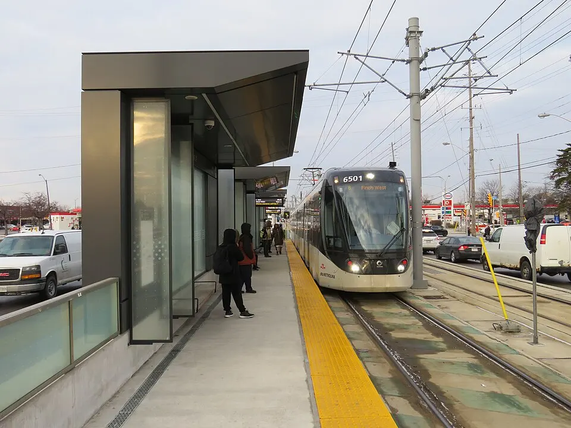

Signal
SignalStation atlas / Jane and Finch
Station history
Jane and Finch


Station history
Metrolinx recommended the full intersection name to distinguish the stop from both Jane Station and Finch Station.
The corner of Jane Street and Finch Avenue West gained its namesake Line 6 stop, with separate platforms on either side of Jane.